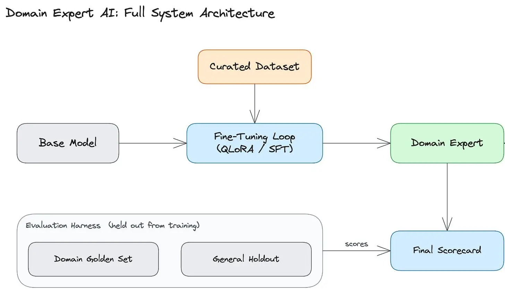
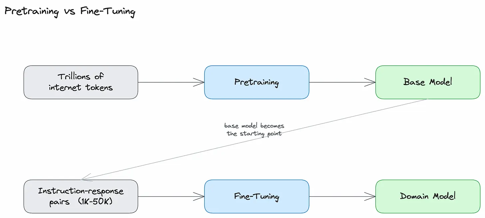
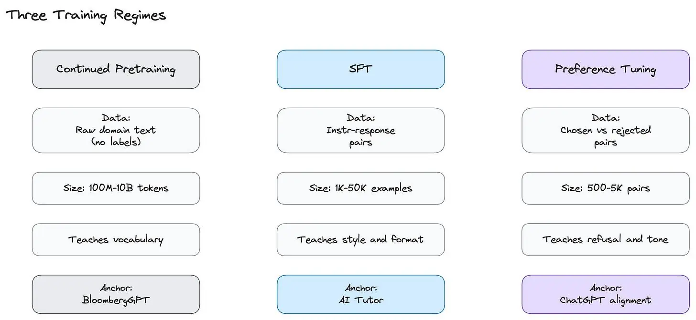
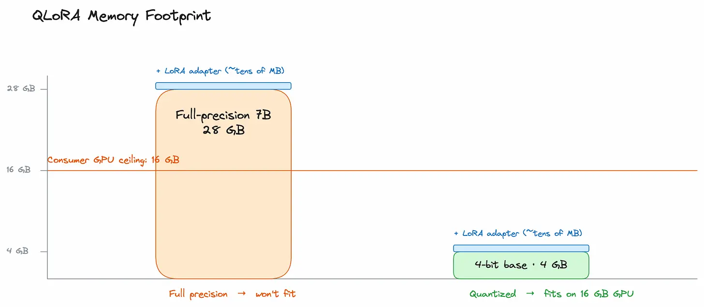

How to Build a Domain Expert AI
#162: Part 4 - Generative AI Masterclass


Share this letter & I’ll send you some rewards for the referrals.
A general-purpose AI model, even with access to clinical notes, still does not write like a clinician…
Give the model access to legal documents, and it still does not draft like a lawyer…
The vocabulary is familiar, but the format and conventions are NOT present by default.
Ask a foundation model to write up a patient visit, and you get:
“The patient is a 70-year-old man with a history of hypertension
and hyperlipidemia who presents to the emergency department
complaining of substernal chest pain, pressure-like,
radiating to the left arm and jaw, with nausea, diaphoresis,
and shortness of breath.”While a clinician writes:
“70 y/o M w/ h/o HTN, HLD presents to ED c/o substernal CP.
Pressure-like, radiates to L arm and jaw. + nausea, diaphoresis, SOB.”Same content…
One is a paragraph; the other is a chart entry. The general model knows the medicine; it doesn’t know how clinicians write it down.
Fine-tuning is how you get them there.
Rather than prompting the model into a style on every call, you train those patterns directly into the model’s weights so they become its defaults. Fine-tuning is how tools like Harvey write like junior associates at large law firms.
Glass Health produces clinical notes in the format clinicians use.
BloombergGPT reasons over financial data the way analysts expect.
GitHub Copilot responds fast enough to feel like autocomplete.
Each of these is a general-purpose model trained in a narrow domain.

This newsletter covers how fine-tuning works, when it is the right choice over prompting or RAG, and how to build it.
Let’s dive in!
[Webinar] 8 levels of context maturity in AI-native engineering (Partner)

AI is in your engineering workflow. While the token spend shows it, the throughput doesn’t. The human is very much still in the loop, and that’s a context problem.
Join live July 23 (FREE) to learn:
The 8 levels of context maturity: where most teams are stuck and what the ceiling looks like at each stage
Why more MCPs, rules, and skills provide agents access but not understanding
How leading engineering teams are using a context engine to make the most of their agents
(Thanks, Unblocked, for partnering on this newsletter.)
I want to reintroduce Louis-François Bouchard as the author of this newsletter.

He’s a best-selling author (Building LLMs for Production), the co-founder of Towards AI, and the creator of the YouTube Channel, What’s AI, where he helps people understand AI and learn how to apply it in the real world.
Through his development work with clients and his content, teaching, and AI training programs on the Towards AI Academy, Louis focuses on making AI practical for builders, engineers, and curious learners alike.
At Towards AI, he and his team train AI engineers through courses built for every stage, from beginner to advanced. That educational mission and the real-world experience building for his clients are exactly why I wanted him in this newsletter series.
Here’s what’s inside this newsletter:
What fine-tuning change in a model? Behavior, style, and domain reasoning patterns.
Low-Rank Adaptation (LoRA) and Quantized Low-Rank Adaptation (QLoRA). The methods that make fine-tuning practical by modifying less than 1% of a model’s weights.
Data quality. Instruction-response pairs, dataset size, synthetic data, and the gap between training distribution and production.
The decision framework. When prompting is enough, when RAG is the right addition, when fine-tuning is warranted, and when all three are needed together.
Alignment beyond Supervised Fine-Tuning (SFT). Reinforcement Learning from Human Feedback (RLHF), Direct Preference Optimization (DPO), model merging, and distillation.
A hands-on comparison. Three configurations for the same clinical SOAP note task: base model, fine-tuned model, and frontier model ceiling.
Onward.
Why Build Your Own Domain Expert AI?
Models such as GPT-5.5, Claude Opus 4.7, and Gemini 2.5 Pro are foundation models: Large Language Models (LLMs) trained on broad, internet-scale text to perform many tasks reasonably well rather than one task very well.
Their defaults are calibrated for a wide audience, not a specific domain.
For a domain product, this means out-of-the-box quality is just the starting point, and specialist users typically expect more…
Domain vocabulary and reasoning. A foundation model recognizes terms such as “Transient Ischemic Attack” and “force majeure,” but recognition is not the same as application. It does not consistently apply the National Institutes of Health (NIH) Stroke Scale, the standard scoring system clinicians use to grade stroke severity. It does not draft a force majeure clause the way a specific law firm drafts it. Fine-tuning bakes those specialized patterns into the model’s weights so they appear by default, without requiring them to be prompted on every call.
Tone and style consistency. Every domain has a house style. Brand voice for marketing, a formal style for legal memos, a structured format for clinical chart notes. Harvey reads like a junior associate at a large law firm because the underlying model has been customized for legal drafting work. Prompting can imitate a style for a turn or two, but the model usually drifts back to its default voice within a few turns.
Latency and model size. A fine-tuned 7-billion-parameter (7B) model often beats a foundation model on a narrow task. On a single Graphics Processing Unit (GPU), a fine-tuned 7B model can produce its first output token in under 300 milliseconds. This metric is called Time-To-First-Token (TTFT). For a product like code autocomplete, where suggestions must appear before the user types the next keystroke, this latency is the difference between a usable and an unusable product. GitHub Copilot is fine-tuned for exactly this reason.
Cost at scale. Above a few hundred thousand queries per month (lower against a flagship-plus-RAG configuration, higher against a mini-class API), a self-hosted fine-tuned model is cheaper than paying for foundation-model Application Programming Interface (API) calls. Below this volume, the work required to build the dataset and run training usually costs more than a year’s worth of foundation-model API bills.
Data privacy. Some training data cannot leave your infrastructure. Patient charts are regulated under the Health Insurance Portability and Accountability Act (HIPAA), the attorney-client privilege protects legal documents, and customer records may be regulated under the General Data Protection Regulation (GDPR) or System and Organization Controls 2 (SOC 2). None of this data can be sent to a third-party API for processing. Open-weight fine-tuning addresses this constraint by keeping the model, training data, and inference traffic within your own Virtual Private Cloud (VPC), behind your own authentication, and with your own audit trail.
Before deciding to fine-tune, you must confirm prompting and Retrieval-Augmented Generation (RAG) do NOT meet your quality bar.
Most people overestimate how much fine-tuning will buy them over a well-engineered prompt combined with retrieval. Fine-tuning is the right answer when one of the five reasons above applies. But it is the wrong answer when you are reaching for it because the prompting felt inconvenient.
Once you have decided to fine-tune, three design questions determine the system: which base model to start with, which dataset to build on, and whether to pair fine-tuning with retrieval.
What We Are Building
The system has four components:
Base model is the pretrained Large Language Model (LLM) the fine-tuning pipeline starts from.
Dataset is a set of instruction-response pairs capturing the behavior the model should produce by default.
Fine-tuning pipeline uses that dataset to shift the base model’s behavior toward the target domain.
API endpoint serves the resulting model, paired with the retrieval layer from newsletter 3, for use cases where the domain also requires fresh facts.
Requirements
System must produce outputs in the domain style and format without per-query examples, and apply domain reasoning without Chain-of-Thought prompting on every call.
It must refuse out-of-scope questions in a calibrated way rather than attempting an answer.
The entire training run must be reproducible, with a locked dataset, locked random seeds, and a versioned model card.
A production ship would also verify that general capability regresses by less than 5% on Massive Multi-task Language Understanding, Professional version (MMLU-Pro) or MT-Bench, and that inference cost is at least 50% below the foundation-model baseline. Both gates are described in Parts 3 and 4 but are not run in Part 5’s walkthrough.
One advanced feature covered later: preference tuning with Direct Preference Optimization (DPO), used to correct behaviors that Supervised Fine-Tuning (SFT) cannot reach reliably.
What this system does not do
It does not call tools or take actions, which is the focus of a future newsletter.
Also, it does not guarantee factual freshness, because the model’s training data is fixed at the point of fine-tuning. For current facts, RAG is still the right layer to add.
Deployment
Part 5 builds the open-weight path and documents the OpenAI fine-tuning path as a hosted alternative.
The open-weight path uses a base model such as Llama, Qwen, or Mistral with LoRA adapters served on vLLM1. The hosted path uses the OpenAI fine-tuning API.
Model selection
The right starting point is the smallest base model that already understands the domain.
Here are three criteria to look for:
Run a 20-question domain probe on the base model; if it cannot answer roughly half correctly, fine-tuning will not recover it, because fine-tuning shifts defaults and does not install knowledge the model never had.
Confirm fine-tuning support: on the open side, Llama, Qwen, and Mistral all support it; on the hosted side, OpenAI API currently exposes GPT-4.1 and GPT-4.1-mini for fine-tuning, since the GPT-5.x reasoning tier is not available for SFT at the time of writing.
Check license fit: Llama community license, Apache 2.0, and the OpenAI Terms of Service each impose different constraints on where the model can be hosted, which determines whether the model can run where your data lives.
Start in the 7B-8B parameter range and scale up only if the domain probe requires it.
Model choice is the last decision you make before training begins.
The next part covers what training actually does to the model you picked…
Part 1: How Fine-Tuning Changes a Model
Pretraining runs next-token prediction over trillions of tokens of text scraped from the internet, books, and code repositories.
By the end of the process, the model has compressed a broad representation of human language and knowledge into its weights. This is the base model: capable across many tasks, specialized in none.
Fine-tuning starts from that base and runs the same training process again, but on a much smaller dataset, typically a few thousand examples, chosen specifically to push the model’s behavior in one direction. The model is not learning language at this stage. Instead, it is learning which of its existing patterns to apply by default.
i.e., fine-tune for behavior, retrieve for knowledge.
Fine-tuning works by reinforcing patterns across many examples until they override the base model’s defaults. A reasoning pattern or output format repeated across thousands of training examples will stick.
A fact that appears once or twice will not, because the model has no reason to weigh it more than the vast body of knowledge it acquired during pretraining.

What Gets Updated During Training
Fine-tuning adjusts every parameter in the model slightly, one example at a time, until its behavior shifts toward what the dataset shows.
The primary cost here is memory:
A 7B model has 7 billion numbers stored on the GPU. Training requires storing a second number alongside each parameter to track how it should change, roughly doubling memory usage to 28 GB.
The optimizer adds a few more bookkeeping values per parameter on top of that, pushing the total GPU memory to 60-80 GB.
Consumer GPUs have 16 to 24 GB of memory, which is why a full fine-tune of a 7B model used to require a cluster and cost tens of thousands of dollars. Parameter-efficient methods (covered later) reduce the requirement to a single 16 GB GPU and bring the cost down to around $10 per run.
The size of the GPU bill forces the choice of training regime; the next decision a team has to make…
Three Training Regimes
There are three ways to fine-tune a model, each using a different kind of dataset:

Continued pretraining runs the same kind of training the base model already underwent, but on raw text from a single domain rather than the open internet. There are no labels; the model just reads a lot of domain text and gets better at predicting the next word in the domain. The dataset is large, ranging from hundreds of millions to billions of words, and the point of the exercise is to teach the model the field’s vocabulary. BloombergGPT started this way with financial text, and Med-PaLM (a medical fine-tuning of Google’s PaLM, Pathways Language Model) started this way with medical text. You should reach for continued pretraining only when the base model barely understands your domain.
Supervised Fine-Tuning (SFT), introduced in newsletter 1, trains on a list of questions paired with the answers the model must produce. The model learns to imitate those answers. Typically, the datasets contain 1,000 to 50,000 of these question-answer pairs. SFT is the right starting point for almost every fine-tuning project, because most domain problems are about style, format, and reasoning patterns rather than missing knowledge.
Preference tuning, which includes both Reinforcement Learning from Human Feedback (RLHF) and DPO, trains on comparisons. For each question, the dataset contains two possible answers and a label indicating which is better. The model learns to produce answers closer to the preferred one. Datasets are smaller, typically 500 to 5,000 pairs. Preference tuning is used to correct behaviors that SFT cannot reliably teach: calibrated refusals, a consistent tone, and output formats that hold up even when users push back.
The practical order is to start with SFT, ship it, identify the specific behaviors that still need work, and then add DPO to address those cases.
Continued pretraining enters the picture “only” if SFT stops improving and the base model clearly does not understand the domain vocabulary.
SFT handles the bulk of the work in a typical project, and the question it raises immediately is how to run it without an 80 GB GPU. The answer is a class of methods called Parameter-Efficient Fine-Tuning (PEFT), which trains only a small fraction of the model’s parameters rather than all of them.
LoRA is the most widely used method in this class…
Low-Rank Adaptation (LoRA)
LoRA leaves the base model’s weights completely frozen and instead trains a small side network alongside it.
The side network is built from two small matrices, conventionally labeled A and B. At inference time, the output of the side network is added on top of the frozen base model’s output.
Only the side network is trained; the base model never changes.
This works because the change required to turn a general model into a domain expert is mathematically small.
You do not need to adjust every parameter in the model; you only need to apply a targeted correction to the parameters that matter. The side network learns the correction. Its capacity is controlled by a setting called the rank, typically 8 or 16, which determines how much the side network can express.
In those settings, LoRA trains fewer than 1% of the parameters full fine-tuning would touch and recovers 90-95% of the quality on most tasks. GPU memory drops by an order of magnitude because the optimizer only tracks the small side network, and the risk of degrading the base model remains low because its weights never change.
Yet LoRA has two trade-offs against full fine-tuning:
First, on most tasks, it matches full fine-tuning in quality, but not always at parity. On hard tasks, full fine-tuning is, on average, a few percentage points stronger.
Second, the side network has a fixed capacity ceiling set by the rank: a rank-16 adapter can only encode so much change to the base model. For large domain shifts, such as moving a general model toward dense medical or legal reasoning, LoRA hits this ceiling and stops improving with more data.
Full fine-tuning has no such ceiling, but it incurs the highest GPU cost and carries the greatest risk of the model forgetting its general capabilities.
It is worth considering only when LoRA has plateaued, and the GPU budget allows it.
Know someone who wants to learn system design? Consider gifting a subscription:
Quantized Low-Rank Adaptation (QLoRA)
LoRA shrinks the GPU memory bill by training only a small side network, but the frozen base model itself still has to sit in GPU memory during training.
For a 7B model stored at full precision, that base model alone is around 28 GB, still too large for most consumer GPUs.
QLoRA is a variant of LoRA that solves this problem:
It uses a technique called quantization, which stores each model parameter with fewer bits than usual. The standard way models are stored uses 32 bits per parameter, which is high precision but consumes a lot of memory.
QLoRA instead stores the frozen base model at 4 bits per parameter. The 7B base model, which took 28 GB at full precision, now fits in roughly 4 GB. The LoRA side network is still trained at 16-bit precision in the BrainFloat 16 (bf16) format, so the quality of the model’s trained parts is not compromised.
The original QLoRA paper demonstrated this approach by fine-tuning a 65-billion-parameter model on a single 48 GB GPU; the 16 GB consumer GPU figure applies the same idea to a smaller 7B base model.
Quality holds within a few percent of full-precision LoRA on most tasks.

QLoRA is the right starting point for most projects…
Three libraries support it with only a few lines of configuration: Hugging Face PEFT, Unsloth, and Axolotl. The cost of a domain fine-tune drops from a multi-thousand-dollar cluster run to a Colab session.
At inference time, there are two options for serving the trained model:
The first choice is to merge the trained adapter into the base model permanently, which gives you fast inference with no adapter swapping but results in a separate copy of the model for each domain.
The second choice is to keep the adapter separate from the base and load it on demand during inference. This approach incurs a small latency penalty per request, but it lets a single base model host many different domain experts simultaneously.
Production systems usually keep them separate and route each request to the appropriate adapter.
So a single GPU can serve a legal expert, a clinical expert, and a finance expert simultaneously, with adapter swaps in the millisecond range.
Yet QLoRA has one trade-off against LoRA…
Quantization is a form of lossy compression: rounding every parameter from 32 bits down to 4 bits introduces small numerical errors. On most tasks, these errors are too small to matter. This is why QLoRA holds within a few percent of full-precision LoRA.
On tasks that require very precise numerical work, such as math, code generation, and strictly structured-output tasks, errors compound and quality drops are more visible.
If the domain is precision-sensitive, start with LoRA at full precision and switch to QLoRA only if memory constraints require it…
Part 2: The Dataset
The dataset is the largest factor in fine-tuning quality.
Tuning hyperparameters such as learning rate, batch size, and number of epochs produces small, marginal gains. While changing the dataset, in size, coverage, or label quality, produces large ones.
When a fine-tune underperforms, the cause is almost always the dataset, NOT the training configuration.
Dataset Format
The dataset format depends on which of the three training regimes you are using.
1. SFT format
SFT requires a list of instruction-response pairs, written in the chat format the base model was trained to follow.
Each pair has a role label (system, user, or assistant) and the text for its turn. The OpenAI fine-tuning API expects a JSONL file (JavaScript Object Notation Lines, one JSON object per line) with a messages array:
{”messages”: [
{”role”: “system”, “content”: “You are AI Tutor.”},
{”role”: “user”, “content”: “What is RAG?”},
{”role”: “assistant”, “content”: “RAG retrieves documents...”}
]}Different open-weight model families require different chat templates:
Llama-3 uses one template with special tokens like
<|begin_of_text|>and<|eot_id|>.Qwen uses the ChatML format with
<|im_start|>and<|im_end|>instead.
Feeding Llama-3-formatted data into a Qwen fine-tune produces a model that has learned the content of the examples but not how to behave as a chat model…
It starts producing raw continuations of the input rather than structured replies because the special tokens it was trained on are absent from the dataset.
So the format must match the base model’s template exactly.
2. DPO format
Direct Preference Optimization (DPO) requires preference triples consisting of a prompt, a chosen response, and a rejected response.
The chosen and rejected responses must differ on exactly the dimension the model is meant to learn. If you are fixing refusal calibration, the prompt would be an out-of-scope question, the chosen response would be a clean refusal, and the rejected response would be an overconfident answer.
If half of your rejected examples are bad because of tone and the other half are bad because of factual errors, DPO will receive a mixed signal and will not learn either behavior cleanly…
3. Continued pretraining format
Continued pretraining requires raw text to be encoded with the base model’s tokenizer.
There is NO formatting requirement beyond clean text: no role labels, no special tokens, no prompt-response structure.
Dataset Size
The dataset size you need depends on what you are asking the model to learn.
The numbers below are practitioner guidance from published fine-tunes and open-source projects, not benchmarked thresholds, but they hold up well as starting points.
Tone and format shift (SFT): 500 - 2,000 examples. The model already knows the language; you are only shifting its defaults.
New domain reasoning (SFT): 5,000 - 20,000 examples. The model has to learn patterns it does not already have.
Preference tuning (DPO): 500 - 5,000 preference pairs. Quality matters more than quantity at this size, so additional pairs help less than cleaner pairs.
Continued pretraining: 100 million - 10 billion tokens. This is the only regime where raw size dominates.
Quality vs Quantity
Dataset size alone does NOT determine fine-tuning quality.
A clean 1,000-example dataset beats a noisy 10,000-example dataset.
The LIMA paper from Meta (Zhou et al., 2023) showed this directly: a 65-billion-parameter Llama fine-tuned on only 1,000 carefully curated examples matched or beat fine-tuned models trained on hundreds of thousands of examples in a controlled human evaluation. Most of a model’s capability comes from pretraining, and a small, clean dataset is enough to shift its defaults.
Here are three concrete checks to separate a clean dataset from a noisy one:
Deduplicate aggressively. A model trained on five copies of the same example treats that example as five times more important than it should.
Drop any example where the response does not answer the instruction. Since the model treats every example as correct, bad examples make it worse rather than just less helpful.
Match the response length distribution in the dataset to the length you expect at inference time. If users ask short questions but your training examples have 500-word answers, the model will default to producing 500-word answers in production, regardless of how short the question is.
Specification Problem
Label consistency is as important as dataset size, and it is where most people lose quality without realizing it.
Every example in the dataset acts as a specification of the desired behavior. If three examples say “refuse this kind of question” and two say “answer cautiously,” the model averages across all five and learns to flip a coin between the two behaviors. The model has no way to know which examples are correct; it treats them all as correct.
This is why annotator agreement matters more than annotator volume:
A 500-example dataset in which two annotators agree on every label will outperform a 5,000-example dataset with inconsistent labels, because in the latter case, the model is given contradictory specifications for the same input.
This is why most people who scale from 100 to 5,000 examples by adding contractors see quality drop rather than rise…
Synthetic Data Generation
Collecting and manually labeling enough examples is slow and expensive, which is why most production datasets are partially or fully generated using a foundation model…
A model such as GPT-5.5 or Claude Opus 4.7 can generate instruction-response pairs at scale, with a human reviewing a sample of the output. This approach works well for shifting format and style because neither requires capabilities the teacher model lacks. But it fails for reasoning tasks the foundation model itself cannot do, because you cannot distill a capability the teacher does not have.
The common production pattern is to split the dataset by purpose:
Use synthetic data for breadth, generating thousands of phrasings of similar questions to cover the input distribution.
Use human-curated data for depth, hand-writing the 500 examples that anchor the hardest behaviors, including refusal and edge cases.
The two sets get mixed for the final fine-tune…
Distribution Shift Between Training and Inference
Even a clean, well-labeled dataset will produce a poor fine-tune if it does not resemble what the model will actually see in production.
If training prompts are short but real users send long ones, the model degrades on longer inputs.
If training questions are clean but real ones have typos and partial sentences, the model degrades on the messier ones.
The model only learns to handle the input distribution it was trained on; inputs outside that distribution are treated as novel, even when they look obvious to a human.
So build the dataset by sampling real or realistic queries.
Good sources include production logs (with Personally Identifiable Information, or PII, scrubbed), user research transcripts, and the actual prompts your application will send.
Also avoid building the dataset from imagination or by rewriting a Frequently Asked Questions (FAQ) document, because FAQ entries are written for browsing humans, not for real user queries, and the resulting distribution will not match production.
We covered how to build a dataset.
Before that work begins, it is worth confirming that fine-tuning is the right tool for the problem at all…
Know someone who wants to learn system design? Consider gifting a subscription:
Part 3: Prompt vs RAG vs Fine-Tune vs Both
Prompting, RAG, fine-tuning, and hybrid of fine-tuning with RAG solve different problems.
Production systems often use two or three of them together, and reaching for a more complex solution before a simpler one has been ruled out is one of the most common and costly mistakes in building AI products…
The Progression Principle
Here are the four options forming a progression from simplest to most complex:
Prompting alone
Prompting plus retrieval (RAG)
Fine-tuning
Fine-tuning plus RAG (hybrid)
Each step adds cost across three dimensions: time to build, dollars per query, and difficulty of debugging when output is wrong.
So start at step one. Then advance only when the evaluation set shows the current step is insufficient. But stop at the step that meets the quality bar.
Let’s now walk through the four options in order, with the conditions under which each one is the right stopping point…
1. Prompting alone
Use prompting when the base model can perform the task with a system prompt and a few-shot examples.
If prompting meets the quality bar on the evaluation set, the remaining steps are unnecessary.
2. RAG
Add retrieval when the information the model needs changes over time (documents, news, internal wikis).
Or when answers must be grounded in specific source documents the user can verify. Or when the model’s writing behavior is acceptable, and only its access to facts is the gap.
3. Fine-tuning
There are two reasons to fine-tune:
Quality: the model’s behavior, style, format, or reasoning is wrong, and prompting cannot fix it consistently, or the domain has its own vocabulary that the base model does not default to.
Deployment: you need to serve a smaller, self-hosted model to meet latency targets that a foundation-model API cannot, you need per-query cost below what a foundation-model API charges, or data privacy constraints prevent sending data to a third-party API at all.
In the deployment case, fine-tuning is what makes the smaller model competitive enough in terms of quality to ship.
GitHub Copilot’s inline completions are the clearest example: the model has to respond in under 300 milliseconds, which rules out a foundation-model API call entirely.
4. Fine-tuning plus RAG (hybrid)
This is the most common configuration in production.
The fine-tune supplies the behavior, and RAG supplies the knowledge…
For example, Harvey combines fine-tuned models with a custom legal retrieval system built on domain-specific embeddings (voyage-law-2-harvey, trained with Voyage on more than 20 billion tokens of US case law).
Harvey orchestrates across foundation models from OpenAI, Anthropic, and Google rather than relying on a single provider (as of 2025), but the hybrid principle still applies: behavior comes from the model layer, and current facts come from retrieval.
Harvey’s implementation is heavier than what most people would build, but the architectural pattern is the same shape…
Should I Fine-Tune?
Fine-tuning is the most expensive of the four options, so it is worth a three-question check before committing:
If the answer to any question is NO, the cheaper option is the correct choice.
If all three are YES, the next decision is whether to pair the fine-tune with RAG.
Most production systems do…
Hybrid Pattern
Most production AI systems combine fine-tuning with RAG.
Fine-tuning teaches the model how to behave, while RAG gives it access to current or private knowledge.
To combine them successfully, pay attention to these three details:
1. Train on retrieved context
Build the fine-tuning dataset as retrieved-context, query, response triples instead of simple query-response pairs.
Retrieved context → Question → AnswerThis teaches the model how to use the output from your actual retrieval system, and NOT just how to answer questions in general.
It also learns the format and typical noise of the retrieved documents it will see in production.
2. Keep retrieval pipeline the same
Fine-tuning does not replace your RAG pipeline…
The retriever, embeddings, chunking strategy, reranker, and vector database all stay the same.
Fine-tuning only changes how the model interprets and uses the retrieved documents.
3. Evaluate complete pipeline
Always evaluate the retriever and the fine-tuned model together.
A fine-tuned model can perform worse than the base model if the retriever returns poor or irrelevant documents. You only discover these failures by testing the full pipeline end-to-end rather than evaluating each component separately.
Part 5 covers a fine-tune-only system because clinical SOAP notes have a fixed structure and do not require current knowledge.
In production, many applications need both specialized behavior and up-to-date information. In those cases, the hybrid approach, fine-tuning plus RAG, is usually the right architecture.
Beyond quality, fine-tuning also has cost trade-offs that become more significant as usage grows.
Cost Comparison
To make it concrete: assume 1 million queries per month, with roughly 800 input tokens and 300 output tokens per query.
A foundation-model API, on its own, costs roughly $13,000 per month at this volume for a flagship model such as gpt-5.5 ($5.00 input / $30.00 output per million tokens).
RAG on top of a foundation-model API roughly quadruples the input tokens because of the retrieved chunks, bringing the cost to roughly $25,000 per month on gpt-5.5, plus embedding API costs and vector database hosting.
A fine-tuned 7B-to-8B-class model running on a single Nvidia A100 80GB GPU through vLLM costs roughly $1,000 to $1,800 per month in compute, depending on the cloud provider.
Bargain providers land near the low end at around $1.35 to $1.49 per hour, while platforms like Modal land near the high end at around $2.50 per hour. On top of compute, you pay a one-time fine-tuning cost of $50 to $300 for a LoRA run, and the RAG infrastructure costs that apply regardless of which model is generating.
At 1 million queries per month, the self-hosted fine-tuned model is roughly an order of magnitude cheaper than calling gpt-5.5 with RAG.
The crossover point, where the self-hosted model becomes cheaper than the API, falls between 40,000 and 75,000 queries per month, depending on compute pricing. Below this threshold, the foundation-model API is cheaper because GPU costs are fixed and API costs scale with usage.
Cost determines whether fine-tuning is viable at scale.
Once this question is settled, the remaining question is which training method to use. SFT covers most cases, but some behaviors are difficult to teach through examples alone.
Alignment Beyond SFT
Four techniques address what SFT leaves unfinished…
RLHF (Reinforcement Learning from Human Feedback) trains a reward model on human preferences. Then uses an algorithm called Proximal Policy Optimization2 (PPO) to fine-tune the policy against the reward model. It is effective for refusal calibration and subtle behavioral adjustments. But it’s operationally complex and expensive. Frontier Labs uses RLHF and its successors (Group Relative Policy Optimization and verifiable-reward RL) for safety alignment and reasoning training. For most people, DPO is the practical alternative.
DPO (Direct Preference Optimization) achieves similar results by applying a single supervised loss directly to preference pairs, with no separate reward model & no PPO loop. In 2026, it has become the default preference-tuning method for people who do not need the full RLHF pipeline.
Model merging combines two fine-tuned models by arithmetic on their weights. For example, a code-tuned variant and a math-tuned variant of the same base. The standard toolkit is mergekit, which supports averaging, SLERP, and TIES3, and requires no new training. Use merging when you have two narrow-domain experts and need a single model that covers both domains.
Distillation trains a smaller student model using the outputs of a larger teacher model. A 1-billion-parameter student trained on a 70-billion-parameter teacher can recover 80 to 95 percent of the teacher’s quality on narrow tasks at an order-of-magnitude lower inference cost, which is how code-autocomplete products like GitHub Copilot reach the sub-second latency the inline suggestions require.
Once a decision is made and a model is trained, the next problem is measuring whether it worked and identifying anything it broke along the way…
Know someone who wants to learn system design? Consider gifting a subscription:
Part 4: How to Know It Worked
Evaluating a fine-tuned model means measuring two things: how well it performs on the domain it was trained for, and how much capability it lost on tasks it was not trained for.
The first covers whether the fine-tune worked…The second covers whether it broke something in the process.
Domain Golden Test Set
A domain golden test set4 contains 100 to 500 examples covering the actual input distribution of the product.
The examples fall into three buckets:
Easy cases are ones the model should answer correctly every time; if it cannot, the fine-tune is broken at the format level.
Medium cases are where fine-tuning earns its keep; these are the cases the base model gets wrong, and the fine-tuned model gets right.
Hard cases are those on which experts themselves disagree; they are useful for tracking improvement across versions but should not drive ship-or-no-ship decisions.
Scoring the golden set against a domain-specific rubric5, rather than generic helpfulness, makes the evaluation meaningful.
For a medical product, a relevant rubric question is whether the answer used the correct International Classification of Diseases, 10th Revision (ICD-10).
Generic helpfulness scores do NOT catch this level of domain-specific correctness.
Catastrophic Forgetting
Catastrophic forgetting is the failure mode fine-tuning is most likely to introduce.
The model gets better at your domain and worse at everything else: arithmetic, common sense, instruction-following on off-domain prompts. This problem occurs across the full range of practical model sizes and is not eliminated by parameter-efficient methods such as Low-Rank Adaptation6 (LoRA).
Recent studies show LoRA “learns less and forgets less” than full fine-tuning, but it does not eliminate forgetting on its own…
Running a general-capability holdout before and after training is the standard way to catch this.
Some common choices are Massive Multi-task Language Understanding7 (MMLU) benchmark, or its successor MMLU-Pro, which expands MMLU to ten answer choices and reduces sensitivity to prompt formatting; Multi-Turn Benchmark (MT-Bench) or its more recent successor Arena Hard, both used to score instruction following on multi-turn conversation; or a hand-built 100-example off-domain set.
A regression of over 5% on the holdout is the practitioner’s heuristic for “the model is overfit to the domain.” If you hit this threshold, then lower the learning rate, reduce the LoRA rank, or mix some general-domain data into the training set.
Med-PaLM 2’s published evaluation reports general-capability results alongside clinical-domain scores (which is the right pattern): every team that ships a domain model should have a number showing how much worse the model performs on things outside its training distribution.
Avoiding Over-Specialization
There are four practical levers for reducing over-specialization, and each one can buy back a few points of general capability on its own:
The first lever is the replay buffer. You mix 10-20% general instruction data, drawn from open datasets, into the training set. This gives the model a foothold in general behavior throughout training. Some people use ratios as low as 5% and still see the effect.
The second lever is multi-task fine-tuning. You train the model on several related domain tasks at once. For example, summarization, question-answering, and format-shifting, rather than on a single task. The model generalizes within the domain rather than memorizing a single input shape.
The third lever is to lower LoRA rank or shorten training time. A rank of 4-8 with 1-2 epochs8 forgets less than a rank of 64 with 5 epochs. You should try the smaller setting first, because you can always add capacity later, but you cannot unforget.
The fourth lever is Kullback-Leibler (KL) regularization. This applies only to DPO and RLHF. The DPO and RLHF loss functions already include a term to penalize the trained model for drifting too far from the reference model. If forgetting is severe, you should increase the beta coefficient for the term.
Holdout Discipline
The evaluation is only as trustworthy as the holdout9 it runs on.
Split the dataset 90 percent for training and 10 percent for holdout before training begins, and never touch the holdout during dataset iteration. This keeps the measurement honest.
People who score the holdout, adjust the dataset, and repeat the loop are leaking information from the holdout into the training one decision at a time. By the third iteration, the holdout score is meaningless.
This is the most common cause of the “evaluation looked great, but production is worse” pattern.
A second, locked test set scored only once at ship time is the safeguard against it.
LLM as Judge with a Domain Rubric
A generic LLM-as-judge scores answers on generic helpfulness; a domain judge scores them against your rubric.
For example,
Did the answer use the correct ICD-10 code?
Did it apply force majeure to the right kind of breach?
Did the chart note include all four standard sections?
Build the rubric with domain experts before training begins, because it becomes the specification model is optimized against.
Two guardrails are standard in practice:
Score one dimension at a time with an isolated judge call,
And use a different model family for the judge than the one being evaluated.
Part 5 applies both in practice, using a clinical SOAP rubric with four dimensions: faithfulness, SOAP structure, clinical style, and plan quality, each scored from 1 to 5 by an independent judge model.
Know someone who wants to learn system design? Consider gifting a subscription:
Part 5: Practical Build
The goal is to fine-tune Qwen3-8B into a clinical documentation expert and then measure its performance against the unadapted base model and gpt-5.5 on the same held-out examples…
The task you are training the model on is converting unstructured medical text into a SOAP note, the standard chart format clinicians use to document a patient visit. SOAP stands for Subjective (what the patient reports), Objective (what the clinician observes), Assessment (what they conclude), and Plan (what they do next).
The key detail is clinicians write SOAP notes in shorthand, NOT full prose. This shorthand is what you are teaching the model through fine-tuning.
For the training, we will use Unsloth, an open-source library that wraps two Hugging Face libraries: PEFT for the LoRA adapter mechanics from Part 1, and TRL for the training loop.
It adds a 4-bit quantized base and a custom CUDA kernel that roughly doubles training speed on a single GPU. This is what makes it practical on a free Colab session.
The specific checkpoint we will fine-tune is unsloth/Qwen3-8B-unsloth-bnb-4bit, trained with QLoRA.
For evaluation, we need two additional models:
gpt-5.5 serves as the frontier ceiling to compare against, and claude-opus-4-7 acts as the judge that scores all three outputs. The reason for using a different model family as the judge is the cross-family guardrail from Part 4. It prevents the judge from sharing the blind spots of the model being evaluated.
If no Anthropic key is available, the same code falls back to OpenAI as the judge, so the notebook still runs end-to-end.
The dataset is Tushar9802/medscribe-soap-712 on Hugging Face, which contains 712 training rows, 89 validation, and 90 test examples.
Each row is a chat-format pair, where the user message is unstructured medical text and the assistant message is the gold SOAP note. An existing dataset is used here to keep the focus on fine-tuning mechanics.
Part 2’s pipeline covers how to build your own.
Scoring runs on a 10-example slice of the test split rather than the full 90 to keep the run affordable. Each answer is judged on four rubric dimensions, giving 120 judge calls in total (10 prompts x 3 configurations x 4 dimensions). Setting EVAL_LIMIT to None scales the same code to the full 90-example split when needed.
The build runs in three phases:
Steps 1 through 3 produce a working, fine-tuned model that generates SOAP notes.
Steps 4 through 6 add the evaluation scaffolding: a held-out slice, a three-configuration matrix, and a domain-rubric scorecard.
Step 7 covers the equivalent SFT job on the OpenAI fine-tuning platform.
Follow the complete notebook in this Colab link.
Setup
This part assumes Python 3.10 or later.
The Colab notebook installs everything in one cell:
pip install -q -U unsloth transformers trl datasets peft accelerate bitsandbytes jsonlines \
huggingface_hub openai anthropicThe notebook reads two API keys and defines three model identifiers.
Here’s the simplified setup:
import os
if not os.environ.get(’OPENAI_API_KEY’):
raise RuntimeError(’Set OPENAI_API_KEY in your environment or Colab secrets.’)
anthropic_key = os.environ.get(’ANTHROPIC_API_KEY’)
OPENAI_CEILING_MODEL = ‘gpt-5.5’
OPENAI_JUDGE_MODEL = OPENAI_CEILING_MODEL
ANTHROPIC_JUDGE_MODEL = ‘claude-opus-4-7’You will need two API keys.
OPENAI_API_KEY is required because the ceiling model and the fallback judge both use it.
ANTHROPIC_API_KEY is optional; if absent, Step 6 automatically uses OpenAI as the judge.
The notebook includes a longer secret-resolver that falls back to Colab user secrets for both keys:
Your First Working Domain Expert (Steps 1–3)
Step 1: Pull and validate the SOAP-note dataset
This block sets the dataset repository and defines the JSONL helpers used throughout the notebook.
The validator checks whether each example has the expected two-message chat shape: one user prompt and one assistant answer.
import json, jsonlines
from collections import defaultdict
from huggingface_hub import hf_hub_download
DATASET_REPO = ‘Tushar9802/medscribe-soap-712’
SPLIT_FILES = {
‘train’: ‘train.jsonl’,
‘validation’: ‘val.jsonl’,
‘test’: ‘test.jsonl’,
}
def load_jsonl(path):
with open(path) as f:
return [json.loads(line) for line in f]
def validate_row(row):
errors = defaultdict(int)
messages = row.get(’messages’, [])
if len(messages) != 2:
errors[’unexpected_message_count’] += 1
expected_roles = [’user’, ‘assistant’]
for idx, message in enumerate(messages):
if ‘role’ not in message or ‘content’ not in message:
errors[’missing_key’] += 1
continue
if message[’role’] not in (’user’, ‘assistant’):
errors[’bad_role’] += 1
if idx < len(expected_roles) and message[’role’] != expected_roles[idx]:
errors[’unexpected_role_order’] += 1
return errors
def prepare_split(split_name, filename):
path = hf_hub_download(
repo_id=DATASET_REPO,
filename=filename,
repo_type=’dataset’,
local_dir=’.’,
)
rows = load_jsonl(path)
errors = defaultdict(int)
formatted = []
for row in rows:
row_errors = validate_row(row)
for key, value in row_errors.items():
errors[key] += value
formatted.append({’messages’: row[’messages’]})
out = f’formatted_{filename}’
with jsonlines.open(out, mode=’w’) as writer:
writer.write_all(formatted)
print(f”{split_name}: {len(formatted)} rows, validation errors: {dict(errors) or ‘none’}”)
return outThen download the three splits.
The notebook rewrites the downloaded JSONL files into local formatted *.jsonl files, so every later step reads the exact same dataset format.
train_file = prepare_split(’train’, SPLIT_FILES[’train’])
val_file = prepare_split(’validation’, SPLIT_FILES[’validation’])
test_file = prepare_split(’test’, SPLIT_FILES[’test’])
train: 712 rows, validation errors: none
validation: 89 rows, validation errors: none
test: 90 rows, validation errors: noneZero errors across all three splits means the data is ready to load.
If any of the counts had been non-zero, the error keys (missing_key, unexpected_message_count, unexpected_role_order) would point at exactly what to fix.
Next, load the local files as Python lists.
Then define two small helper functions, user_prompt and assistant_answer. Each takes one row and returns one piece of it: user_prompt returns the medical text the user sent in, and assistant_answer returns the gold SOAP note the model is supposed to produce.
Every step after this one calls these helpers instead of reaching into the row’s structure by hand.
train_examples = load_jsonl(train_file)
val_examples = load_jsonl(val_file)
test_examples = load_jsonl(test_file)
def user_prompt(example):
return next(message[’content’] for message in example[’messages’] if message[’role’] == ‘user’)
def assistant_answer(example):
return next(message[’content’] for message in example[’messages’] if message[’role’] == ‘assistant’)
print({’train’: len(train_examples), ‘validation’: len(val_examples), ‘test’: len(test_examples)})
print(’\nPrompt preview:\n’, user_prompt(train_examples[0])[:900])
print(’\nGold SOAP note preview:\n’, assistant_answer(train_examples[0])[:600])Step 2: Fine-tune Qwen3-8B with QLoRA
This is the training step.
It implements Part 1’s QLoRA mechanism in code: the base model remains frozen in 4-bit memory, and a small LoRA adapter learns the SOAP format on top of it. We run two epochs of supervised fine-tuning10 (SFT), the regime used in Part 1 for tone-and-format tasks.
First, load the quantized Qwen3 base, attach LoRA adapters, and count the rendered chat-template tokens in each split so you can see the approximate training size before launching the run:
from unsloth import FastLanguageModel, is_bfloat16_supported
from trl import SFTTrainer, SFTConfig
from datasets import load_dataset
BASE_MODEL = ‘unsloth/Qwen3-8B-unsloth-bnb-4bit’
model, tokenizer = FastLanguageModel.from_pretrained(
BASE_MODEL,
max_seq_length=2048,
load_in_4bit=True,
)
model = FastLanguageModel.get_peft_model(
model,
r=16, # LoRA rank — capacity of the side network; 8–16 is standard
lora_alpha=16, # scales the LoRA update; alpha == r is a safe default
lora_dropout=0,
target_modules=[ # attach LoRA to attention + MLP projections, not embeddings
‘q_proj’, ‘k_proj’, ‘v_proj’, ‘o_proj’,
‘gate_proj’, ‘up_proj’, ‘down_proj’,
],
)The seven-layer names (q_proj through down_proj) are the attention and feed-forward projections inside each transformer block.
You do not need to know what each one does to use the code; you only need to know “all seven” is the default that works for format-heavy tasks like SOAP shorthand. Rendered through Qwen3’s chat template, the dataset comes to roughly 800K train tokens, 100K validation tokens, and 90K test tokens, which fits comfortably within the training budget on a free Colab T4.
The notebook prints these numbers with a small count_tokens helper; we skip the helper here because the count itself is the lesson, not the code that produces it.
A chat template is the model-specific format that wraps each user-and-assistant turn in special tokens the model was trained to recognize.
Each model family has its own template.
Using apply_chat_template makes sure we use Qwen3’s exact format, not a guess. Next, render the train and validation splits with the template.
enable_thinking=False is important: Qwen3 emits <think> reasoning traces by default, and we want the model to learn concise chart-ready output, not internal reasoning.
# Qwen3 emits <think> traces by default. Disable so the model learns
# concise chart-ready output, not internal reasoning.
def to_template(batch):
return {’text’: [
tokenizer.apply_chat_template(
messages,
tokenize=False,
enable_thinking=False,
)
for messages in batch[’messages’]
]}
split_ds = load_dataset(’json’, data_files={
‘train’: train_file,
‘validation’: val_file,
‘test’: test_file,
})
train_ds = split_ds[’train’].map(to_template, batched=True)
val_ds = split_ds[’validation’].map(to_template, batched=True)Mismatched chat templates are the single most common silent failure when fine-tuning open-weight models.
Using apply_chat_template rather than building the strings by hand guarantees the format matches what Qwen3 was post-trained on.
Now build the SFTTrainer.
The trainer needs four decisions:
how many epochs (full passes through the data),
how big each batch is,
how aggressive the learning rate is,
and whether to use 16-bit precision.
The other arguments are defaults that work for any small dataset on a free Colab GPU.
# 2 epochs is the practitioner default for a small SOAP corpus —
# more epochs starts forgetting general capability.
# batch_size 2 × grad_accum 4 = effective batch 8, the most a T4 fits at 2048 ctx.
# lr 2e-4 is the standard Unsloth QLoRA learning rate.
trainer = SFTTrainer(
model=model,
tokenizer=tokenizer,
train_dataset=train_ds,
dataset_text_field=’text’,
args=SFTConfig(
num_train_epochs=2,
per_device_train_batch_size=2,
gradient_accumulation_steps=4,
learning_rate=2e-4,
warmup_steps=5,
logging_steps=10,
fp16=not is_bfloat16_supported(),
bf16=is_bfloat16_supported(),
optim=’adamw_8bit’,
output_dir=’medscribe-soap-lora’,
report_to=’none’,
save_strategy=’no’,
),
)warmup_steps=5ramps the learning rate up over the first five steps so the LoRA adapter does not get whipsawed at the start.logging_steps=10prints a training loss line every 10 steps so you can watch the loss drop.report_to=’none’turns off Weights & Biases/MLflow logging for the notebook walk-through.And
save_strategy=’no’skips automatic checkpointing because we save the merged model explicitly after the run.
The training run itself is one line:
trainer.train()Unsloth11 prints the training plan up front:
Num examples = 712 | Num Epochs = 2 | Total steps = 178
Batch size per device = 2 | Gradient accumulation steps = 4 | Total batch size = 8
Trainable parameters = 43,646,976 of 8,234,382,336 (0.53% trained)An epoch is one full pass through the training data.
Two epochs over 712 examples is 1,424 examples seen during training. At a batch size of 8, that is 1,424 ÷ 8 = 178 training steps, which matches the number Unsloth printed.
Only 0.53 percent of the parameters are trainable, which is the LoRA mechanic from Part 1. The frozen base provides general capability, and the small adapter learns the SOAP format. Training takes about 1.5-2 hours on a free Colab T4 GPU and under 30 minutes on a paid A10G or A100.
The next cell does three things:
It removes a Colab progress-bar callback that conflicts with evaluate,
Manually prepares the validation dataset in the format SFTTrainer expects internally,
And runs the validation pass.
Each argument to _prepare_dataset is the value the trainer would have used itself; passing them explicitly makes the call reproducible across TRL versions.
After the validation pass, it saves a merged 16-bit checkpoint.
from transformers.utils.notebook import NotebookProgressCallback
try:
trainer.remove_callback(NotebookProgressCallback)
except Exception:
pass
# trainer.evaluate auto-prepares val_ds in newer TRL, but pinning
# the call explicitly here avoids a silent re-format on save.
prepared_val_ds = trainer._prepare_dataset(
val_ds,
processing_class=tokenizer,
args=trainer.args,
packing=False,
formatting_func=None,
dataset_name=’validation’,
)
val_metrics = trainer.evaluate(eval_dataset=prepared_val_ds)
print(val_metrics)
model.save_pretrained_merged(
‘medscribe-soap-merged’,
tokenizer,
save_method=’merged_16bit’,
)The validation pass reports eval_loss, which is the same cross-entropy loss the trainer optimized, but computed on the 89 held-out validation rows.
A value in the ~1.1–1.3 range indicates the model has learned the SOAP format without being overly confident in the training set, suggesting it is not overfitting.
Saving with save_method=’merged_16bit’ writes the base model and the LoRA adapter into one combined file. This is what we load in Step 3 to generate SOAP notes.
(A future newsletter will cover the production serving options.)
Step 3: Smoke-test all three configurations
A smoke test runs one input through the full pipeline to confirm everything works before we spend money on the full evaluation in Steps 4 through 6.
First, switch the local model into inference mode, create the OpenAI client, and define small helpers to toggle the LoRA adapters on or off:
import torch
from openai import OpenAI
FastLanguageModel.for_inference(model)
openai_client = OpenAI()
def adapters_off():
model.base_model.disable_adapter_layers()
def adapters_on():
model.base_model.enable_adapter_layers()The adapter toggle is the LoRA mechanic from Part 1 paying off in code.
Because the LoRA adapter is a small set of weights on top of the frozen base, we can turn it on for the fine-tuned behavior and off for the base behavior, without reloading the model. One model in memory, two configurations.
Next, define the two generator functions.
generate_local runs Qwen3 on our GPU with adapters enabled or disabled. generate_openai calls gpt-5.5 through the Responses API.
The local path passes an explicit attention_mask so Qwen does not warn about inferring one.
def generate_local(prompt, use_adapter, max_new_tokens=512):
if use_adapter:
adapters_on()
else:
adapters_off()
input_ids = tokenizer.apply_chat_template(
[{’role’: ‘user’, ‘content’: prompt}],
return_tensors=’pt’,
add_generation_prompt=True,
enable_thinking=False,
).to(’cuda’)
attention_mask = torch.ones_like(input_ids)
with torch.no_grad():
output = model.generate(
input_ids=input_ids,
attention_mask=attention_mask,
max_new_tokens=max_new_tokens,
do_sample=False, # greedy — deterministic for reproducible comparisons
pad_token_id=tokenizer.eos_token_id, # Qwen3 has no pad token; reuse EOS
)
text = tokenizer.decode(output[0][input_ids.shape[-1]:], skip_special_tokens=True)
return text.strip()
def generate_openai(prompt, max_output_tokens=512):
response = openai_client.responses.create(
model=OPENAI_CEILING_MODEL,
input=[{’role’: ‘user’, ‘content’: prompt}],
max_output_tokens=max_output_tokens,
reasoning={’effort’: ‘low’},
text={’verbosity’: ‘low’},
)
return response.output_text.strip()do_sample=False is greedy decoding, which makes the local outputs deterministic across runs, so the comparison with the GPT ceiling is reproducible.
reasoning={‘effort’: ‘low’} and text={‘verbosity’: ‘low’} tell gpt-5.5 not to reason at length or write in long-form prose; SOAP is a structural task, not a multi-step reasoning task.
Now run all three configurations on the first held-out example, a 21-month-old presenting for delayed motor development:
sample = test_examples[0]
sample_prompt = user_prompt(sample)
sample_reference = assistant_answer(sample)
print(’=== SOURCE PROMPT ===\n’, sample_prompt[:1200], ‘\n’)
print(’=== GOLD SOAP NOTE ===\n’, sample_reference[:800], ‘\n’)
print(’=== BASE Qwen3 ===\n’, generate_local(sample_prompt, use_adapter=False)[:800], ‘\n’)
print(’=== Fine-tuned Qwen3 ===\n’, generate_local(sample_prompt, use_adapter=True)[:800], ‘\n’)
print(’=== GPT ceiling ===\n’, generate_openai(sample_prompt)[:800])
=== BASE Qwen3 ===
**SOAP NOTE:**
**SUBJECTIVE:**
- Patient is a 21-month-old male with a history of delayed motor development.
- Parents report “jaw quivering” since birth, which increases with crying.
- Delayed milestones: sat at 7 months, stood at 11 months ...
=== Fine-tuned Qwen3 ===
**SUBJECTIVE:**
21 yo M c/o delayed motor development. HPI: Delayed milestones, including walking.
Reports “jaw quivering” since birth and transient left exotropia. PMH: Delayed
motor development. FHX: Family members with “lazy eye.” ...
=== GPT ceiling ===
## SUBJECTIVE
- **CC:** Delayed motor development.
- **HPI:** 21-month-old male presented for delayed motor milestones, jaw “quivering,”
and “lazy eye.” He was born full-term via uncomplicated spontaneous vaginal delivery,
birth weight 8 lb 10 oz. ...The three outputs land in three visibly different registers:
The base model writes verbose bulleted prose: correct content, but not what a clinician writes.
The fine-tuned model writes chart shorthand (c/o, HPI, PMH, FHX), which is the target format.
gpt-5.5 writes polished narrative prose with full sentences, which scores high on faithfulness but loses on chart-readiness.
The tone-and-format gap is visible in a single example.
Worth noting: the fine-tuned model writes 21 yo M for a 21-month-old patient.
This is a real faithfulness error (the patient is 21 months, not 21 years), not a style quirk, and it is exactly the kind of mismatch the faithfulness dimension in Step 6 is meant to catch. Fine-tuning teaches the model the chart-shorthand voice, but on a 712-row dataset, it does not reliably teach every numeric convention. Step 6’s faithfulness score (4.4) reflects this, and a follow-up DPO pass over the worst examples is the right next move (see Part 1).
After Step 3, the MVP is complete.
Steps 4 through 6 turn this one-example demo into a numeric scorecard.
Know someone who wants to learn system design? Consider gifting a subscription:
Adding the Production Scaffolding (Steps 4–6)
Step 4: Build the held-out evaluation slice
This notebook defaults to a 10-example held-out test slice to control for speed and cost.
Set EVAL_LIMIT = None if you want to score the full 90-example test split.
EVAL_LIMIT = 10 # demo size — Part 4 recommends 100–500 for a real domain golden set
selected_test = test_examples if EVAL_LIMIT is None else test_examples[:EVAL_LIMIT]
eval_rows = [
{
‘id’: idx,
‘prompt’: user_prompt(example),
‘reference’: assistant_answer(example),
}
for idx, example in enumerate(selected_test, start=1)
]
print(f’Scoring {len(eval_rows)} held-out test examples’)
print(’Prompt length (chars) of first example:’, len(eval_rows[0][’prompt’]))The test split is locked: we did not touch these 10 rows during training or while iterating over the dataset.
This is the holdout discipline from Part 4.
Step 5: Run the evaluation matrix
Three configurations on the same 10 prompts: base Qwen312, fine-tuned Qwen3, and the hosted GPT ceiling.
Each configuration sees the same held-out prompts.
def run_config(generator):
rows = []
for row in eval_rows:
answer = generator(row[’prompt’])
rows.append({
**row,
‘answer’: answer,
})
return rows
results = {
‘base’: run_config(lambda prompt: generate_local(prompt, use_adapter=False)),
‘fine_tuned’: run_config(lambda prompt: generate_local(prompt, use_adapter=True)),
‘gpt_ceiling’: run_config(generate_openai),
}
for cfg, rows in results.items():
sample = rows[0]
print(f’[{cfg}]’)
print(sample[’answer’][:500])
print()Three configurations, ten rows each, thirty generated answers.
The next step is to send them to the judge.
Step 6: Score with an LLM-as-Judge and a domain rubric
If an Anthropic key is present, the notebook uses Claude as a cross-family judge.
Otherwise, it falls back to OpenAI. The rubric aligns directly with the task: faithfulness, SOAP structure, clinical style, and plan quality. extract_text normalizes the response shape across the two providers so the rest of the scoring code does not have to branch.
import re
from statistics import mean
USE_ANTHROPIC_JUDGE = bool(os.environ.get(’ANTHROPIC_API_KEY’))
if USE_ANTHROPIC_JUDGE:
from anthropic import Anthropic
judge_client = Anthropic()
judge_model = ANTHROPIC_JUDGE_MODEL
print(’Using Anthropic judge:’, judge_model)
else:
judge_client = openai_client
judge_model = OPENAI_JUDGE_MODEL
print(’Using OpenAI judge fallback:’, judge_model)
DIMENSION_RUBRICS = {
‘faithfulness’: (
‘Score whether every clinical claim is supported by the source medical text. ‘
‘Penalize invented findings, diagnoses, medications, vitals, and plan items.’
),
‘soap_structure’: (
‘Score whether the answer is a structured SOAP note with Subjective, Objective, ‘
‘Assessment, and Plan sections in the correct order.’
),
‘clinical_style’: (
‘Reward concise, chart-ready clinical shorthand. Penalize verbose textbook prose, ‘
‘generic assistant language, and unnecessary explanation.’
),
‘plan_quality’: (
‘Reward a specific, actionable PLAN that stays within the evidence in the source text.’
),
}
def extract_text(message):
if USE_ANTHROPIC_JUDGE:
return ‘’.join(
block.text for block in message.content
if getattr(block, ‘type’, None) == ‘text’
)
return message.output_textA note on the SDK shapes you will see in judge_dimension below.
The two providers expose slightly different request formats for the same job. Anthropic’s messages.create takes a system argument separately from the user message. OpenAI’s responses.create takes the system instruction as a developer role inside the input array.
The shapes differ, but the request is the same: one system instruction plus one user message, returning JSON.
Next, the judge calls itself.
parse_json_object first tries the standard json.loads; if the judge wraps its JSON object in stray text or has an unescaped quote inside the reason string, the regex fallback extracts the score and reason directly. You can read past the regex; it looks for a JSON-shaped object with a numeric score field and a reason string, and only runs when json.loads fails.
judge_dimension scores one rubric dimension per call, which keeps each score independent and explainable.
def parse_json_object(text):
text = text.strip()
try:
return json.loads(text)
except json.JSONDecodeError:
pass
match = re.search(
r’\{\s*”score”\s*:\s*(\d+)\s*,\s*”reason”\s*:\s*”(.*)”\s*\}’,
text,
re.S,
)
if match:
return {
‘score’: int(match.group(1)),
‘reason’: match.group(2).strip(),
}
raise ValueError(f’No parseable JSON object found in judge response: {text}’)
def judge_dimension(source_text, reference, answer, dimension, rubric):
prompt = (
f’Dimension: {dimension}\n’
f’Rubric: {rubric}\n\n’
‘Use the source medical text as the primary evidence. ‘
‘Use the gold SOAP note as a secondary signal for completeness and phrasing.\n\n’
‘Return JSON only in the form ‘
‘{”score”: <int 1-5>, “reason”: “<one short sentence>”}.\n’
‘Do not use quotation marks inside the reason string.\n\n’
f’Source medical text:\n{source_text}\n\n’
f’Gold SOAP note:\n{reference}\n\n’
f’Candidate answer:\n{answer}’
)
if USE_ANTHROPIC_JUDGE:
response = judge_client.messages.create(
model=judge_model,
max_tokens=220,
system=(
‘You are a strict evaluator for clinical SOAP notes. ‘
‘Score one dimension only and return valid JSON.’
),
messages=[{’role’: ‘user’, ‘content’: prompt}],
)
else:
response = judge_client.responses.create(
model=judge_model,
input=[
{
‘role’: ‘developer’,
‘content’: (
‘You are a strict evaluator for clinical SOAP notes. ‘
‘Score one dimension only and return valid JSON.’
),
},
{’role’: ‘user’, ‘content’: prompt},
],
max_output_tokens=220,
)
return parse_json_object(extract_text(response))
def score_answer(row):
return {
dimension: judge_dimension(
row[’prompt’], row[’reference’], row[’answer’], dimension, rubric
)
for dimension, rubric in DIMENSION_RUBRICS.items()
}The judge gives semantic scores.
We also want a simple deterministic check that does not depend on the judge: did the answer include the four SOAP sections, and were they in the right order?
section_completeness returns 0.0 to 1.0, where 1.0 means all four sections are present in order.
SOAP_SECTIONS = [’subjective’, ‘objective’, ‘assessment’, ‘plan’]
def normalize_heading_line(line):
line = line.lower().strip()
line = re.sub(r’^[>\-\*\#\s]+’, ‘’, line)
line = re.sub(r’[\*\#\s:]+$’, ‘’, line)
return line
def section_completeness(text):
“”“Return 0.0–1.0: fraction of SOAP sections present; 1.0 only if all four appear in order.”“”
lines = [
normalize_heading_line(line)
for line in text.splitlines()
if line.strip()
]
positions = []
for section in SOAP_SECTIONS:
idx = next(
(i for i, line in enumerate(lines) if line.startswith(section)),
None,
)
positions.append(idx)
found = [pos for pos in positions if pos is not None]
if not found:
return 0.0
score = len(found) / len(SOAP_SECTIONS)
if len(found) == len(SOAP_SECTIONS) and found == sorted(found):
return 1.0
return scoreThe normalizer is small but necessary because models emit ## SUBJECTIVE, **Subjective:**, > SUBJECTIVE, and Subjective: interchangeably, and we want all four to count as the same heading.
Finally, run the judge on every example, store per-example results, and print the summary table for each configuration.
summarize_scored_rows averages the four judge dimensions and reports two structural metrics alongside: avg_section_completeness (the mean of section_completeness across all rows) and full_section_rate (the fraction of rows that scored a perfect 1.0).
def summarize_scored_rows(rows):
def avg(dimension):
return round(mean(row[’judge_scores’][dimension][’score’] for row in rows), 2)
section_scores = [section_completeness(row[’answer’]) for row in rows]
overall_scores = [
mean(score[’score’] for score in row[’judge_scores’].values())
for row in rows
]
return {
‘n’: len(rows),
‘faithfulness’: avg(’faithfulness’),
‘soap_structure’: avg(’soap_structure’),
‘clinical_style’: avg(’clinical_style’),
‘plan_quality’: avg(’plan_quality’),
‘overall’: round(mean(overall_scores), 2),
‘avg_section_completeness’: round(mean(section_scores), 2),
‘full_section_rate’: round(
mean(1.0 if score == 1.0 else 0.0 for score in section_scores), 2
),
}
scored_results = {}
score_summaries = {}
for cfg, rows in results.items():
scored_rows = []
for row in rows:
judge_scores = score_answer(row)
scored_rows.append({
**row,
‘judge_scores’: judge_scores,
‘section_completeness’: section_completeness(row[’answer’]),
})
scored_results[cfg] = scored_rows
score_summaries[cfg] = summarize_scored_rows(scored_rows)
for cfg, summary in score_summaries.items():
print(f’\n[{cfg}]’)
print(summary)
On the 10-example held-out slice:
[base]
{’n’: 10, ‘faithfulness’: 3.6, ‘soap_structure’: 4.7, ‘clinical_style’: 2.5,
‘plan_quality’: 3.6, ‘overall’: 3.6,
‘avg_section_completeness’: 0.88, ‘full_section_rate’: 0.7}
[fine_tuned]
{’n’: 10, ‘faithfulness’: 4.4, ‘soap_structure’: 5.0, ‘clinical_style’: 4.3,
‘plan_quality’: 4.7, ‘overall’: 4.6,
‘avg_section_completeness’: 1.0, ‘full_section_rate’: 1.0}
[gpt_ceiling]
{’n’: 10, ‘faithfulness’: 4.5, ‘soap_structure’: 4.8, ‘clinical_style’: 3.0,
‘plan_quality’: 4.2, ‘overall’: 4.12,
‘avg_section_completeness’: 0.9, ‘full_section_rate’: 0.8}The fine-tuned Qwen3 takes the top overall score (4.6), ahead of gpt-5.5 (4.12) and the un-adapted base (3.6).
The breakdown is the part that matters.
gpt-5.5 still edges out the fine-tune on raw faithfulness, but only narrowly (4.5 vs. 4.4); the gap that motivated the comparison has nearly closed. The fine-tune leads on every other dimension: clinical style (4.3 vs. 3.0 for the ceiling and 2.5 for the base), SOAP structure (5.0 vs. 4.8 and 4.7), and plan quality (4.7 vs. 4.2 and 3.6).
The base model is the floor across three of four dimensions; in the SOAP structure, it is closer to the frontier. This means the base Qwen3 already knows the headings, just not the chart-shorthand voice or the actionable plan style that fine-tuning added.
The deterministic SOAP-section checks tell the same story without involving the judge: the fine-tune hits all four sections in order on every example (full_section_rate = 1.0), the base misses one section on 30% of examples (full_section_rate = 0.7), and gpt-5.5 misses one section on 20% (full_section_rate = 0.8).
But there are two caveats:
First, these are 10 held-out examples from a single run, not a published benchmark; absolute numbers will shift with a different slice.
Second, the full 90-example run (
EVAL_LIMIT = None) is the version a production team should run before any ship decision; it costs 9x as many judge calls but yields a more stable ordering.
If the scorecard surfaces a small number of confident-but-wrong answers (4.4 faithfulness average implies a handful of examples below 4), the right next step is not another SFT pass but a short round of DPO on those specific mismatches, as described in Part 1.
Step 7: Legacy OpenAI Fine-Tuning Path (Optional)
If you still have legacy OpenAI fine-tuning access, you can upload the same train and validation files and tune them on gpt-4.1-mini.
OpenAI exposes SFT on the GPT-4.1 family; the GPT-5.x reasoning tier is not available for fine-tuning. The notebook ships this cell commented out because it is optional and not required for the open-weight Colab path.
Check platform.openai.com/docs/models for the current list of fine-tunable models before running.
# from openai import OpenAI
# client = OpenAI()
# train_id = client.files.create(file=open(train_file, ‘rb’), purpose=’fine-tune’).id
# val_id = client.files.create(file=open(val_file, ‘rb’), purpose=’fine-tune’).id
# job = client.fine_tuning.jobs.create(
# training_file=train_id,
# validation_file=val_id,
# model=’gpt-4.1-mini’,
# hyperparameters={
# ‘n_epochs’: 2,
# ‘batch_size’: 2,
# ‘learning_rate_multiplier’: 0.8,
# },
# )
# print(’Job:’, job.id)The job runs in 15 to 30 minutes and costs well under a dollar on the 712-row dataset at current gpt-4.1-mini fine-tuning rates (provider pricing shifts quarterly).
The returned model identifier, in the form ft:gpt-4.1-mini:your-org:medscribe-soap:XXXX, drops into Step 5’s evaluation matrix in place of gpt-5.5. The rest of Steps 5 and 6 is unchanged.
Scaling the Dataset
The 712-pair dataset is sufficient to demonstrate the mechanics and achieve the top overall score on the 10-example slice.
For a clinical production fine-tune, the next steps are more data, broader specialty coverage, and a held-out test split graded by an actual clinician rather than a model.
The scaling pipeline mirrors Part 2’s generation loop:
Sample real clinical text from a larger source, de-identified, with IRB or equivalent approval.
Call a hosted model through the OpenAI Batch API to generate one SOAP note per source text.
Validate the format of every pair with Step 1’s validator.
Deduplicate any pair above 0.95 cosine similarity. Drop any pair that fails a faithfulness filter (an LLM-as-Judge check that the source supports the SOAP note).
Split the result 80 percent training, 10 percent validation, 10 percent locked test.
Cost and wall-clock time depend on source-text length, the chosen hosted model’s per-token rate, and whether the run uses the Batch API (50 percent of the standard rate, 24-hour window) or the synchronous API.
Any clinical deployment also needs human-in-the-loop review before any note touches a patient’s chart.
Closing Thoughts
We fine-tuned Qwen3-8B on a 712-row clinical documentation dataset, scored it on a held-out slice of the test split against the unadapted base and a hosted GPT ceiling, and saw the fine-tuned 8B achieve the top overall score (4.6 vs. 4.12 for gpt-5.5 and 3.6 for the base).
The frontier model still edged out the fine-tune on raw faithfulness, but only narrowly; on clinical style, SOAP structure, and plan quality, the fine-tune led. Remember this rule from Part 3: fine-tune for behavior, retrieve for knowledge, and combine the two when a real production system needs both.
The model we built writes and reasons like a specialist, but it cannot do anything. If you ask it to look up a patient’s chart, query a case-law database, or trigger a workflow, the most it can produce is a description of what it would do.
The next newsletter fixes this limitation…
We add tool use and agents: the model calls functions, retrieves live data, chains multiple steps together, and decides what to do next. Then the model stops being a generator and starts being a system that acts.
👋 I’d like to thank Louis-François for partnering on this newsletter series.
If you want to build a production version of this system, their Full Stack AI Engineering course teaches it through a real build. Through 94 lessons, you will build a RAG-powered AI tutor from scratch and implement prompt engineering, data pipeline, RAG pipeline, advanced retrieval, fine-tuning, and production deployment.
Know someone who wants to learn system design? Consider gifting a subscription:

Thank you for supporting this newsletter.
You are now 210,001+ readers strong, very close to 210k. Let’s try to get 211k readers by 19 July. Consider sharing this letter with your friends and get rewards.
Y’all are the best.

vLLM is an open-source inference engine for serving Large Language Models (LLMs) efficiently in production.
Proximal Policy Optimization (PPO) improves an AI model by rewarding better responses while limiting how much the model can change in each training step.
SLERP and TIES are two algorithms used to merge multiple fine-tuned models into a single model without additional training.
SLERP: Smoothly interpolates between two models’ weights to create a merged model.
TIES: Merges multiple fine-tuned models by removing weak and conflicting weight updates before combining them.
A golden test set is a locked collection of verified examples used to measure a model's performance after training.
A rubric is a set of criteria used to score the quality of a model’s output.
Low-Rank Adaptation (LoRA) is a fine-tuning technique that trains a small set of new parameters instead of modifying the entire model.
Massive Multi-task Language Understanding (MMLU) is a benchmark used to measure an LLM’s general knowledge and reasoning ability across many subjects.
An epoch is one complete pass through the entire training dataset.
A holdout set is a portion of the dataset kept separate from training and used only to measure how well the model performs on unseen data.
Supervised Fine-Tuning (SFT) trains an LLM on labeled input-output examples so it learns to produce the desired behavior, style, or task by default.
Unsloth is an open-source library that makes fine-tuning LLMs faster and more memory-efficient.
Qwen is a family of open-weight large language models developed by Alibaba that can be fine-tuned and self-hosted for specialized AI applications.


 | A guest post by
|